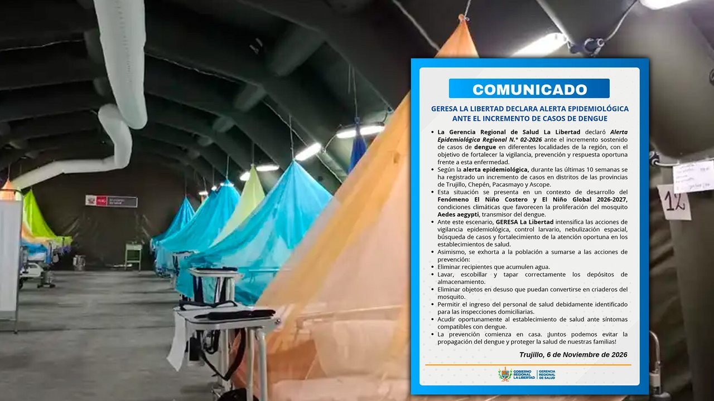

Respaldamos el trabajo técnico de la DDC Piura en la gestión del riesgo de desastres aplicado al patrimonio cultural”, señaló el ministro Beingolea.




Respaldamos el trabajo técnico de la DDC Piura en la gestión del riesgo de desastres aplicado al patrimonio cultural”, señaló el ministro Beingolea.
Movistar será auspiciador oficial de la visita del Papa León catorce al Perú ¿Quieres ver al papa León catorce en el Estadio Nacional? El representante gremial aseguró que la visita del Papa León catorce también generará oportunidades para que las pequeñas empresas desarrollen nuevos productos y servicios vinculados al turismo religioso…
Ese diagnóstico contrastó con sus expectativas para Florida, donde Byron Donalds ganó las elecciones del 3 de noviembre y se prepara para sucederlo en Tallahassee. Florida sweeps again, congrats to the statewide ticket: Byron Donalds, Gov James Uthmeier, AG Blaise Ingoglia, CFO Wilton Simpson, Ag Comm.
La alerta se produce en un contexto marcado por el desarrollo del Fenómeno El Niño Costero y El Niño Global 2026 a 2027, cuyas condiciones climáticas podrían favorecer la proliferación del mosquito Aedes aegypti, principal transmisor del dengue.
ESPN Premium: es el canal en Argentina que transmitirá el partido entre Boca Juniors vs. Defensa y Justicia por la fecha 16 del Torneo Clausura de la Liga Profesional Argentina 2026, este sábado 7 de noviembre desde las.
por no haber acreditado, dentro del plazo establecido, el levantamiento de la causal de pérdida total del capital social y de la reserva cooperativa, que motivó su sometimiento a régimen de intervención.
Freen Sarocha en su paso por América Latina; en Perú tiene cientos de fans. Eso fue lo que ocurrió con Freen Sarocha durante su esperado encuentro con el público peruano. Freen Sarocha Y como toda buena celebración entre una artista y sus fans, la música tenía que estar presente.
Don Omar confirmó que volverá a Lima el 28 de octubre de 2027 como parte de su gira latinoamericana The Last King World Tour, aunque todavía no se ha informado el recinto que recibirá su presentación en la capital peruana.
Manuel Neuer, arquero del Bayern Munich, se lesionó este sábado en el pie izquierdo, el mismo en el que sufrió una lesión recientemente, durante la primera parte del encuentro que disputa su equipo frente al Mainz correspondiente a la novena jornada de la Bundesliga.
Cada edición dura menos de dos minutos. En la web tienes el resumen de cada historia y el enlace directo al medio original para leerla completa.
Conoce Olfatecho →